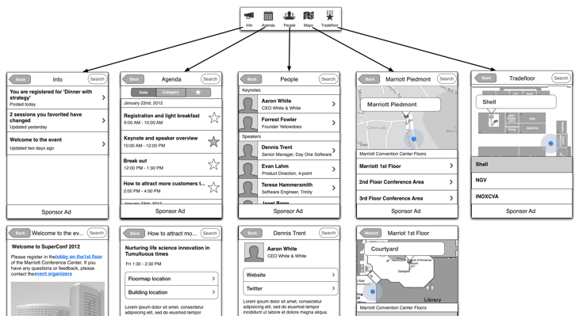
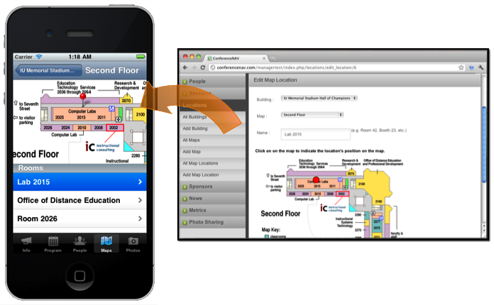
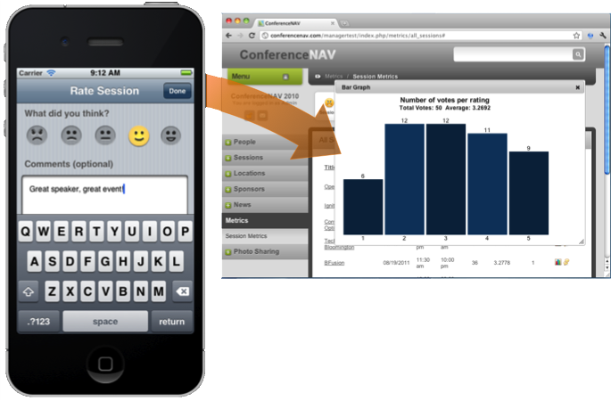
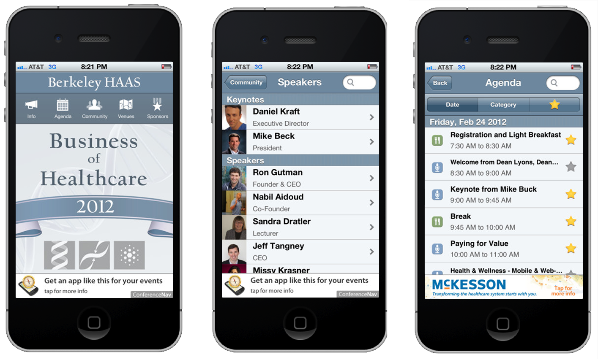
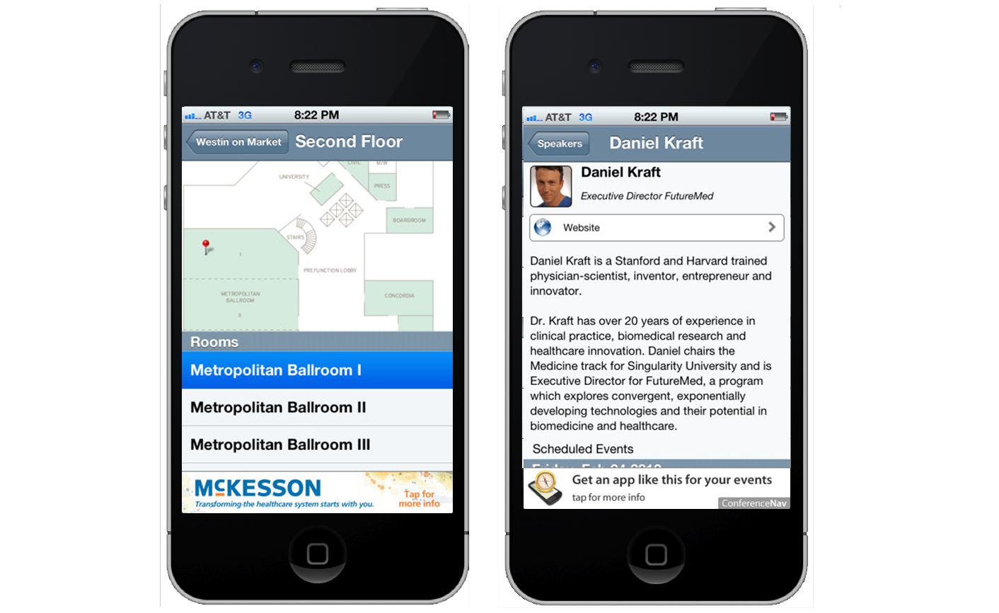

Conference Nav
Large-scale conferences and tradeshows needed an improved mobile experience. Our team used user-centered design and development principles to create a next-generation conference app framework.
Check out a demo app on the appstore, created for the Berkeley HAAS Business of Healthcare conference.
The problem
Large-scale conferences and tradeshows spend tens of thousands of dollars on organizing and printing conference material. Depending on the event, these pamphlets may be as big as 100 pages, and suffer from severe information-finding problems.
Increasingly, event attendees rely on their mobile phones for conference updates and information. But event organizers simply don't have the time or resources to create a worthy mobile experience. At the time, conference apps that did exist worked well for smaller events, but could not accommodate larger events.


Challenges
Through a series of in-person interviews and tradeshow vendors, along with our own experience, we discovered that:
Organizers can't connect to people
- Follow-ups at tradeshow tables
- Updates to event (rescheduling, cancellations, etc.)
- Feedback from events
People can't find what they want
- Tables at trade shows, sponsor tables. Attendees often need to find a specific table, but maps in event guides can be difficult to parse.
- Schedule and speakers - Attendees often want to find a talk by speaker or subject, but also need to negotiate time constraints. Guides offer no good way to parse this information dynamically and inform the attendee how these events align with their calendar
Design
We designed a scalable, modular solution for large-scale events. The app needed to be organizer-friendly, but also user-centered. Thankfully, these interests often align:
- Searchable, dynamic content for speakers, events and location-based interests.
- Updatable - user informed of changes made to things that impact them
- Works online/offline - will store current state and only update when a connection is found
- Prominence for promoted items by organizer (advertising, donor status, etc.)
Organizer experience
ConferenceNav featured a publisher update screen, where organizers could produce content and publish them to the app. This could happen pre- or post-launch, and changes would populate to the participant's devices automatically. Organizers could upload profile images, change presenter information, create agenda items and like sessions to floor plans and maps.
Post-event, organizers could login and see attendee session feedback. They could also see which sessions received the most attention, which tradeshow booths had the most traffic, and which speakers attendees were most interested in.
 Participant experience
Participants would download the app from the iTunes Appstore or Google Play store. Once completed, they could use the app to star sessions they were interested, find relevant session rooms or tradeshow booths, and find other participants/speakers.
Most of the needs we identified for participants were around information finding (where something is, what time its at, who is speaking) and connecting with others (other participants, speakers).
Once a session they starred was completed, they would be prompted to rate it using a smiley system. Starred items, session ratings and other relevant metrics would be sent to the server.
In future versions we had planned for an opted-in attendee experience, where attendees could post a photo, their LinkedIn details, etc. and connect with each other. This would improve their co-attendee experience, and allow tradeshow booths to connect with attendees on a more personal-level (as opposed to badge scanners).
 Result
We created the app for the Berkely HAAS Business of Healthcare. Our demo went well, participants found the app easy to use, and organizers mentioned they could have printed far fewer programs as a result. The feedback system also worked well for the organizers, and they reported the system reduced their review aggregate time by two-thirds.